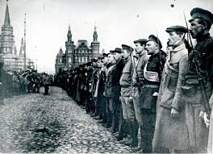
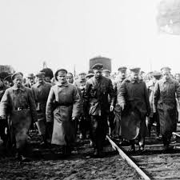

After all this the war had a lot of damages like the death of 0ver 10 million people including damages on the countries some like economic damages, social damages. Some are that the land of the war had shrunk over 62% area and some economic damages were that the private business and the industries were forced to provide food or sources. The economy of some countries had shrunk over 11% of their economy and thousands of peasants farmers were obligated to go to war making a huge problem of shortage of food.
Over this rude war over 10 million innocent lives were lost. The cause of this were such as the bombs and shootings there were over the territory. Also this people were murdered for being opposites to bolsheviks and the other peasants life just were horrible, miserable for them.
Finally and lucky the war ended the 25 oct of 1923. The red army took power over the eastern port of Vladivostok and this war suddenly came to an end.